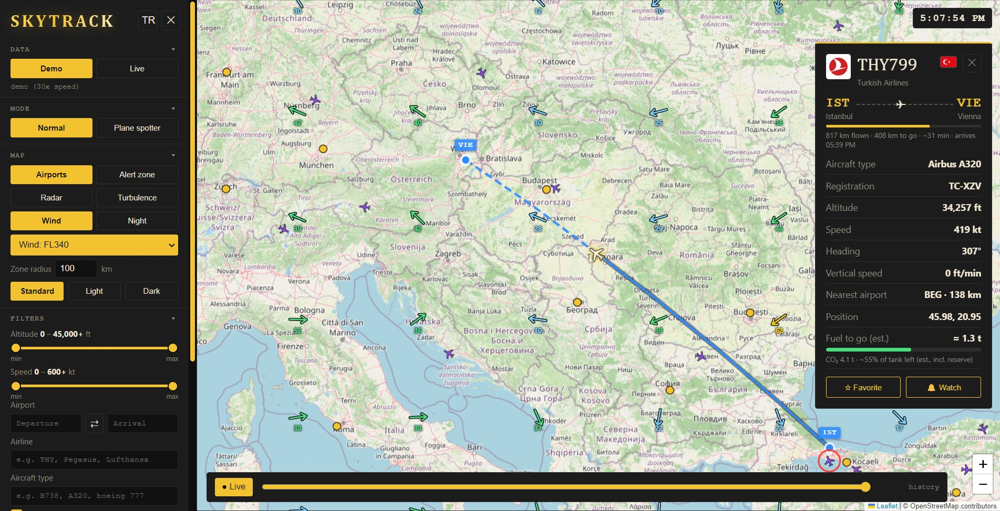

Watch the sky live.
SkyTrack is a free desktop flight tracker, similar to Flightradar24. It runs on Windows, macOS and Linux. No account or API key needed.

Features
Small, fast, and everything you need at hand.
Live flights
Aircraft positions refresh every 15 seconds. Move the map and the new area loads right away.
Flight details
Airline, aircraft type, registration, photo, route, distance and time left, altitude, speed and vertical speed.
Route and trail
The route is drawn as a great-circle arc. The last ~30 minutes of the flight path show as a trail.
Filters
Altitude range and speed range (two handles each), departure/arrival airport, airline, aircraft type, aircraft on the ground, and favorites only.
Alert zone
Pick a 10–500 km circle on the map. Get a notification when an aircraft enters it.
Replay
Rewind the last hour with the slider at the bottom. A label shows the time you are viewing. Press “Live” to return.
Demo mode
45 simulated flights, no internet needed. Time runs 30× faster.
Airport panel
Click an airport for its photo, city and country, current weather, METAR and TAF, and live arrivals and departures. Click a flight to open it.
Watchlist
Watch a plane and get a notification when it takes off or lands, wherever it is in the world.
Today's flights
See every flight an aircraft made today, with times, distance and top altitude. Click one to draw it on the map.
Emergency alerts
Aircraft squawking 7500, 7600 or 7700 get a blinking red ring and a notification.
Rain radar
Add a live precipitation layer to the map with one click.
Plane spotter mode
An optional mode with a logbook, “new aircraft” and “new type” badges, extra details and CSV export. Off by default, so the app stays simple.
Turbulence ahead
The flight card tells you whether turbulence is reported or forecast on the route ahead, at the aircraft's altitude: green for none, yellow for moderate, red for high.
Registration flag
The card shows the flag of the country the aircraft is registered in.
Wind and fuel
Head or tail wind on the card, an estimated arrival time, and a rough fuel and CO₂ estimate for the rest of the flight, with a bar for the fuel left.
Turbulence, wind and night layers
Show SIGMET and G-AIRMET turbulence areas, wind arrows at a flight level you choose, and the day and night sides of the Earth on the map.
Foldable menu
Fold any section of the left menu, including the aircraft list. SkyTrack remembers what you folded.
English and Turkish
Switch the whole interface between English and Turkish with one button.
Map styles
Standard, light and dark maps.
Fast with many planes
All aircraft are drawn on one canvas. Around 3,700 aircraft over Europe draw in about 8 ms.
Download
Pick the way that suits you. Both are free, and no account is needed.
One click, then run the installer. Windows may show a “Windows protected your PC” notice because the installer isn't code-signed yet: choose More info → Run anyway. All releases: GitHub Releases.
Or install from the console
Works on Windows, macOS and Linux. You need Node.js 18 or newer and Git.
- Clone the project.
- Install dependencies.
- Start the app.
git clone https://github.com/SametDuhan/airock.git cd airock npm install npm start
To build an installer yourself, run npm run dist. Live mode does not work if you open index.html in a browser. It only works from the desktop app.
Data sources
Fully open data. Free sources have rate limits, so fewer aircraft may show when zoomed out.
adsb.lol and adsb.fi
Live positions and today's flights. Requests are spread over both feeds.
OpenSky
Wide view and backup source.
adsbdb.com
Route, aircraft type, registration and photo.
Open-Meteo
Airport weather and wind at flight levels.
aviationweather.gov
METAR and TAF reports, SIGMET and G-AIRMET turbulence areas, and pilot reports.
RainViewer
Rain radar layer.
Wikipedia and OpenStreetMap
Airport photos, and the city and country of each airport.